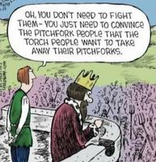

0
"It's finally time," writes Phoronix — since "no known Linux distribution vendors are still shipping with i486 CPU support."
"A patch queued into one of the development branches ahead of the upcoming Linux 7.1 merge window is set to finally begin the process of phasing out and ultimately removing Intel 486 CPU support from the Linux kernel."
More details from XDA-Developers:
Authored by Ingo Molnar, the change, titled "x86/cpu: Remove M486/M486SX/ELAN support," begins dismantling Linux's built-in support for the i486, which was first released back in 1989. As the changelog notes, even Linus is keen to cut ties with the architecture: "In the x86 architecture we have various complicated hardware emulation facilities on x86-32 to support ancient 32-bit CPUs that very very few people are using with modern kernels. This compatibility glue is sometimes even causing problems that people spend time to resolve, which time could be spent on other things. As Linus recently remarked: 'I really get the feeling that it's time to leave i486 support behind. There's zero real reason for anybody to waste one second of development effort on this kind of issue'..."
If you're one of the rare few who still keep the decades-old CPU alive, your best bet will be to grab an LTS Linux distro that keeps the older version of Linux for a few more years.
Read more of this story at Slashdot.
Russia's "great crackdown" on VPNs — and a clampdown on Telegram's messaging platform — had an unintended side effect, reports Bloomberg. It "triggered the widespread banking outage seen across the country this week, Telegram's billionaire founder Pavel Durov said."
"Telegram was banned in Russia, yet 65 million Russians still use it daily via VPNs," Durov said Saturday in a post on Telegram. "The government has spent years trying to ban VPNs too. Their blocking attempts just triggered a massive banking failure; cash briefly became the only payment method nationwide yesterday." Attempts on Friday to limit VPN use could have sparked the disruption affecting banking apps, The Bell and other Russian media reported, citing industry sources who weren't identified.
The outage may have been caused by an overload in the filtering systems run by Russia's communications watchdog, according to the reports, with experts warning that major restrictions risk undermining network stability... Separately, payments for Apple Inc.'s app store and other services became unavailable in Russia from April 1, the US company said on its website, without saying why. Earlier, RBC newswire reported that the Digital Development Ministry had asked mobile operators to disable top-ups, which could help limit VPN use....
Durov, who's being investigated in Russia for allegedly aiding terrorist activity, compared the situation in his home country to Iran, where similar restrictions prompted widespread adoption of VPNs instead of the intended shift to state-backed messaging apps. "Welcome back to the Digital Resistance, my Russian brothers and sisters," said Durov, who has lived in Dubai and France in recent years. "The entire nation is now mobilized to bypass these absurd restrictions," he wrote, adding that Telegram would continue adapting to make its traffic harder to detect and block.
Read more of this story at Slashdot.
NASA's Artemis astronauts are now entering "the lunar sphere of influence," reports NBC News, "meaning the pull of the moon's gravity will become stronger than Earth's." Now as they begin their swing around the moon, the Artemis astronauts "are chasing after Apollo 13's maximum range from Earth," reports the Associated Press, hoping to beat its distance from Earth by more than 4,100 miles (6,600 kilometers).
They'll begin their six-hour lunar flyby 14 hours from now (at 2:45 p.m. ET Monday). But in a space-to-earth interview Saturday with NBC News, the astronauts were already describing their first glimpses of the edge of the far side:
[NASA astronaut Christina Koch realized] it looked different from what she was accustomed to on Earth. "The darker parts just aren't quite in the right place," she said. "And something about you senses that is not the moon that I'm used to seeing...."
[Astronaut Reid] Wiseman called the flight a "magnificent accomplishment" and said the astronauts' ability to gaze at both Earth and the moon from their spacecraft has been "truly awe-inspiring." "The Earth is almost in full eclipse. The moon is almost in full daylight, and the only way you could get that view is to be halfway between the two entities," he said... And while the early photos of Earth and the moon that [Canadian astronaut Jeremy] Hansen and his colleagues have beamed back have been spectacular, the Canadian astronaut said they pale in comparison to the real deal outside their capsule's windows. "I know those photos are amazing," he said, "but let me assure you, it is another level of amazing up here."
And their upcoming six-hour lunar flyby "promises views of the moon's far side that were too dark or too difficult to see by the 24 Apollo astronauts who preceded them," notes the Associated Press:
A total solar eclipse also awaits them as the moon blocks the sun, exposing snippets of shimmering corona.... At closest approach, they will come within 4,070 miles (6,550 kilometers) of the moon. Because they launched on April 1, the rendezvous won't have as much of the far lunar side illuminated as other dates would have. But the crew still will be able make out "definite chunks of the far side that have never been seen" by humans, said NASA geologist Kelsey Young, including a good portion of Orientale Basin.
They'll call down their observations as they photograph the gray, pockmarked scenes. There's a suite of professional-quality cameras on board, and each astronaut also has an iPhone for more informal, spur-of-the-minute picture-taking... Orion will be out of contact with Mission Control for nearly an hour when it's behind the moon. The same thing happened during the Apollo moonshots. NASA is relying on its Deep Space Network to communicate with the crew, but the giant antennas in California, Spain and Australia won't have a direct line of sight when Orion disappears behind the moon for approximately 40 minutes...
Once Artemis II departs the lunar neighborhood, it will take four days to return home. The capsule will aim for a splashdown in the Pacific near San Diego on April 10, nine days after its Florida launch. During the flight back, the astronauts will link up via radio with the crew of the orbiting International Space Station. This is the first time that a moon crew has colleagues in space at the same time and NASA can't pass up the opportunity for a cosmic chitchat.
Read more of this story at Slashdot.
Hundreds of theatres are now showing a new documentary called The AI Doc: Or How I Became An Apocaloptimist. Variety calls it "playful and heady,"edited "with a spirit of ADHD alertness." The New York Times suggests it "tries to cover so much that it ends up being more confusing than clarifying, but parts are fascinating."
But the Los Angeles Times calls it an "aggravating soup of information and opinion that wants to move at the speed of machine thought." So while co-director Daniel Roher asks whether he should bring a child into a world with AI, "Perhaps more urgently, should Roher have made an AI doc that treats us like children?"
First, he parades all the safety doomers, seeming to believe their warnings that an unfeeling superintelligence is upon us and we can't trust it. Then, sufficiently disturbed, he hauls in the AI cheerleaders, a suspiciously positive gang who can envision only medical miracles and grindless lives in which we're all full-time artists. Only then, after this simplistic setup where platitudes reign, do we get the section in which the subject is treated like the brave (and grave) new world it is: geopolitically fraught, economically tenuous and a playground for billionaires.
Why couldn't the complexity have been the dialogue from the beginning, instead of the play-dumb cartoon "The AI Doc" feels like for so long? Maybe Roher believes this is what our increasingly gullible, truth-challenged citizenry needs from an explanatory doc: a flashy, kindhearted reminder that we're the change we need to be.
Read more reactions here and here. Mashable warns the documentary's director "will ultimately craft a journey that feels like a panic attack in real time. In the end, you may not feel better about mankind's chances against the rise of AI. But you'll likely feel less helpless in the future before us all."
They also point out that the film "shares some ways its audience can more actively be apart of the conversation, and provides a link to the film's website for engagement," where 6,948 people have now signed up for its newsletter. ("Demand a seat at the table," urges its signup button, under a warning that "Government and AI companies are designing our future without us. We need to reclaim our voice in shaping the future of AI...")
Read more of this story at Slashdot.
Meet the "journalist" who "uploads press releases or analyst notes into AI tools and prompts them to spit out articles that he can edit and publish quickly," according to the Wall Street Journal.
"AI-assisted stories accounted for nearly 20% of Fortune's web traffic in the second half of 2025." And most were written by 42-year-old Nick Lichtenberg, who has now written over 600 AI-assisted stories, producing "more stories in six months than any of his colleagues at Fortune delivered in a year."
One Wednesday in February, he cranked out seven. "I'm a bit of a freak," Lichtenberg said... A story by Lichtenberg sometimes starts with a prompt entered into Perplexity or Google's NotebookLM, asking it to write something based on a headline he comes up with. He moves the AI tools' initial drafts into a content-management system and edits the stories before publishing them for Fortune's readers... A piece from earlier that morning about Josh D'Amaro being named Disney CEO took 10 minutes to get online, he said...
Like other journalists, Lichtenberg vets his stories. He refers back to the original documents to confirm the information he's reporting is correct. He reaches out to companies for comment. But he admits his process isn't as thorough as that of magazine fact-checkers.
While Lichtenberg started out saying his stories were co-authored with "Fortune Intelligence", he now typically signs his own name, according to the article, "because he feels the work is mostly his own." (Though his stories "sometimes" disclose generative AI was used as a research tool...) The article asks with he could be "a bellwether for where much of the media business is headed..."
"Much of the content people now consume online is generated by artificial intelligence, with some 9% of newly published newspaper articles either partially or fully AI-generated, according to a 2025 study led by the University of Maryland. The number of AI-generated articles on the web surpassed human-written ones in late 2024, according to research and marketing agency Graphite."
Some executives have made full-throated declarations about the threat posed by AI. New York Times publisher A.G. Sulzberger said AI "is almost certainly going to usher in an unprecedented torrent of crap," referencing deepfakes as an example. The NewsGuild of New York, the union representing Fortune employees and journalists at other media outlets, said the people are what makes journalism so powerful. "You simply can't replicate lived experiences, human judgment and expertise," said president Susan DeCarava.
For Chris Quinn, the editor of local publications Cleveland.com and the Plain Dealer, AI tools have helped tame other torrents facing the industry. AI has allowed the outlets to cover counties in Ohio that otherwise might go ignored by scraping information from local websites and sending "tips" to reporters, he said. It has also edited stories and written first drafts so the newsrooms' journalists can focus on the calls, research and reporting needed for their stories.... Newsrooms from the New York Times to The Wall Street Journal are deploying AI in various ways to help reporters and editors work more efficiently....
Not all newsrooms disclose their use of AI, and in some cases have rolled out new tools that resulted in errors or PR gaffes. An October study from the European Broadcasting Union and the BBC, which relied on professional journalists to evaluate the news integrity of more than 3,000 AI responses, found that almost half of all AI responses had at least one significant issue.
Last week the New York Times even issued a correction when a freelance book reviewer using an AI tool unknowingly included "language and details similar to those in a review of the same book published in The Guardian." But it was actually "the second time in a few days that the Times was called out for potential AI plagiarism," according to the American journalist writing The Handbasket newsletter.
We must stem the idea being pushed by tech companies and their billionaire funders who've sunk too much into their products to admit defeat that the infiltration of AI into journalism is inevitable; because from my perch as an independent journalist, it simply is not...
Some AI-loving journalists appear to believe that if they're clear enough with the AI program they're using, it will truly understand what they're seeking and not just do what it's made to do: steal shit... If you want to work with machines, get a job that requires it. There are a whole lot more of those than there are writing jobs, so free up space for people who actually want to do the work. You're not doing the world a favor by gifting it your human/AI hybrid. Journalism will not miss you if you leave...
But meanwhile, USA Today recently tried hiring for a new position: AI-Assisted reporter. (The lucky reporter will "support the launch and scaling of AI-assisted local journalism in a major U.S. metro," working with tools including Copilot and Perplexity, pioneering possible future expansions and "AI-enabled newsroom operations that support and augment human-led journalism.") And Google is already sponsoring a "publishing innovation award"...
Read more of this story at Slashdot.
0
One crime ring scammed 2,000 elderly people of more than $27 million between 2021 and 2023 using tech support/bank impersonation/refund scams. "Victims were in their 70s and 80s," reports the U.S. Attorney's office for California's southern district. Victims were first told they'd received a refund (either online or via phone), but then told they'd been "over-refunded" a massive amount, and asked to return that amount.
But 42-year-old Jiandong Chen just admitted Thursday in a U.S. federal court that he was involved in the fraud and money laundering via cryptocurrency — pleading guilty to two charges with maximum penalties of 40 years in prison and a $1 million fine, plus 20 years in prison with a maximum fine of $500,000 or twice the amount laundered. "Chen, a Chinese national, is the second defendant charged in a five-defendant indictment." And what tripped him up seems to be that "Certain members of the conspiracy also did in-person pickups of money directly from victims..."
And so YouTube enters the story — when the scammers called pranksters with 1,790,000 subscribers to their "Trilogy Media" channel. In an elaborate three-hour video, the team of pranksters lured the scammer to a rented Airbnb where they're staging a fake funeral with a nun. (One of the men acting in the video remembers "we start doing a prayer... I'm holding the scammer's hand in my nun outfit...")
They convince the scammer to collect the cash from a dead man — "Is there anything you'd like to say to him?" Then there's demon voices. The scammer's victim resurrects from the dead. Did the cash mule bring holy water?
The end result was a video titled "CONFRONTING SCAMMERS WITH A FAKE FUNERAL (EPIC REACTIONS)". But two and a half years later, their "cash mule sting house" video has racked up over 1.3 million views, 22,000 likes, and 2,979 comments. ("This video is longer than Oppenheimer. Thanks for the laughs fellas.")
And the scammer is facing 60 years in prison.
Read more of this story at Slashdot.
11 days ago Apple launched device-level age restrictions in the U.K. There were some glitches, reports the blog 9to5Mac.
For me, the experience was an entirely painless one, taking less than 30 seconds. All I had to do was tap a confirm and continue button, and Apple told me that the length of time I'd had an Apple account was used to confirm that I'm 18+. Others, however, experienced difficulties with the process timing out or failing to complete. We summarized some of the steps you can take to try to address this. Apple has since listed additional acceptable ways to verify your age. "You can confirm your age with a credit card, or by scanning a driver's license or one of the following PASS-accredited Proof of Age cards: CitizenCard, My ID Card, TOTUM ID card, or Young Scot National Entitlement Card."
If you don't verify your age, then you'll be treated as a child or teenager, meaning that both the web content filter and communication safety features are switched on.
Apple is continuing the roll-out in Singapore (population 6 million) and South Korea (population 52 million), the article points out, citing a new Apple support document.
South Korea's law actually requires Apple to re-verify someone's age annually.
Read more of this story at Slashdot.
"Google has announced that it's currently testing a new feature for Chrome 148 that could speed up day-to-day browsing," reports PC World:
[T]he browser can intelligently postpone the loading of certain elements. Why load all images at the start when it can instead load images as you get close to them while scrolling? Chrome and Chromium-based browsers have had built-in lazy loading support for images and iframes since 2019, but this feature would make browsers capable of lazy loading video and audio elements, too. Note, however, that this won't benefit YouTube video embeds — those are already lazy loadable since they're embedded using iframes. Actual video and audio elements are rarer but not uncommon. In addition to Chrome, lazy loading of video and audio elements is also expected to be added to other Chromium-based browsers, including Microsoft Edge and Vivaldi.
Read more of this story at Slashdot.
An anonymous reader quotes a report from KrebsOnSecurity: An elusive hacker who went by the handle "UNKN" and ran the early Russian ransomware groups GandCrab and REvil now has a name and a face. Authorities in Germany say 31-year-old Russian Daniil Maksimovich Shchukin headed both cybercrime gangs and helped carry out at least 130 acts of computer sabotage and extortion against victims across the country between 2019 and 2021. Shchukin was named as UNKN (a.k.a. UNKNOWN) in an advisory published by the German Federal Criminal Police (the "Bundeskriminalamt" or BKA for short). The BKA said Shchukin and another Russian -- 43-year-old Anatoly Sergeevitsch Kravchuk -- extorted nearly $2 million euros across two dozen cyberattacks that caused more than 35 million euros in total economic damage.
Germany's BKA said Shchukin acted as the head of one of the largest worldwide operating ransomware groups GandCrab and REvil, which pioneered the practice of double extortion -- charging victims once for a key needed to unlock hacked systems, and a separate payment in exchange for a promise not to publish stolen data. Shchukin's name appeared in a Feb. 2023 filing (PDF) from the U.S. Justice Department seeking the seizure of various cryptocurrency accounts associated with proceeds from the REvil ransomware gang's activities. The government said the digital wallet tied to Shchukin contained more than $317,000 in ill-gotten cryptocurrency. The BKA believes Shchukin resides in Krasnodar, Russia, where he is from. "Based on the investigations so far, it is assumed that the wanted person is abroad, presumably in Russia," the BKA advised. "Travel behavior cannot be ruled out."
Read more of this story at Slashdot.
More Americans have moved into upper-middle-class incomes over the past several decades (source paywalled; alternative source), with new research suggesting that group has grown sharply while the lower and core middle class have shrunk. The Wall Street Journal reports: In 2024, about 31% of Americans were part of the upper middle class, up from about 10% in 1979, according to a report released this year by the right-leaning American Enterprise Institute. There is no single, standard definition of middle class, or upper middle class, and what counts as a hefty income in one city can feel paltry in another. The AEI report, by Stephen Rose and Scott Winship, classified a family of three earning $133,000 to $400,000 in 2024 dollars as upper middle class. Households earning more were categorized as rich. The analysis looked just at incomes, not assets such as stocks or real estate.
[...] The gains span generations. Many baby boomers, born to parents who grew up in the Great Depression, are living well on their savings, aided by steady Social Security checks and decades of stock-portfolio gains that they can now tap. Millennials, who everyone worried would be permanently set back by the 2008-09 financial crisis, are earning solid incomes, buying homes and surpassing their parents. Many families are surprised to find that they have moved into this new economic tier, and see themselves as comfortable, not rich. They tend to have jobs that are white collar but not flashy -- think accountants, not tech founders.
This doesn't mean that all Americans are climbing the ladder. Entrenched inflation and higher prices on major necessities have pushed many families closer to the financial edge, or locked them out of homeownership. Those costs weigh on high-earning families too, and for many are the reason they don't feel wealthy. The AEI report divided families into five different groups by income. Three groups were in the middle: lower middle class, core middle class and upper middle class. The authors found that more families now fall into the two highest-earning groups -- upper middle class and rich -- and fewer fall into the three lower-earning categories.
Read more of this story at Slashdot.
Halter, a New Zealand agtech startup now valued at $2 billion, has raised $220 million to expand its AI-powered cattle management system. "Halter is now valued at $2 billion following the Series E, which was led by Peter Thiel's Founders Fund with participation from Blackbird, DCVC, Bond, Bessemer, and several others," reports Inc. From the report: alter plans to use the funding to expand its existing footprint in the U.S., Australia, and New Zealand, as well as to grow into new markets such as Ireland, the U.K., and parts of North and South America. The round is one of the biggest to-date in the industry, and comes amid growing adoption of the technology among U.S. ranchers. According to Halter, U.S. ranchers have erected some 60,000 miles of virtual fencing since the company's launch in 2024.
Halter's technology works through a system of solar-powered collars and in-pasture towers that collect data -- some 6,000 data points per collar per minute -- from grazing cattle and feed it into a cloud-based platform and app for farmers. The collars are ergonomically designed to be comfortable for the cattle wearing them, and leverage AI to play audio cues or vibrate when it is time to move to a different grazing location or if they step outside of a predetermined zone. The collars can also deliver an electric pulse if an animal does not respond.
Halter's app also creates a digital twin of a ranch, which essentially means a digital replica that leverages real-time data to accurately reflect conditions. Farmers can consult the app to check on their herd, or fence, and move cattle with just a few clicks. Halter also has a proprietary algorithm that it calls a "Cowgorithm" trained on seven billion hours of animal behavior. Altogether, this technology is meant to make ranchers' lives easier when herding cattle, help them save money on building physical fencing, and provide insights about pasture management to improve soil health and pasture productivity. Halter says some 2,000 farmers and ranchers currently use its tech worldwide.
Read more of this story at Slashdot.
An anonymous reader quotes a report from TechCrunch: AI skeptics aren't the only ones warning users not to unthinkingly trust models' outputs -- that's what the AI companies say themselves in their terms of service. Take Microsoft, which is currently focused on getting corporate customers to pay for Copilot. But it's also been getting dinged on social media over Copilot's terms of use, which appear to have been last updated on October 24, 2025. "Copilot is for entertainment purposes only," the company warned. "It can make mistakes, and it may not work as intended. Don't rely on Copilot for important advice. Use Copilot at your own risk." Microsoft described the terms of service as "legacy language," saying it will be updated.
Tom's Hardware notes that similar AI warnings remain common across the industry, with companies like OpenAI and xAI also cautioning users not to treat chatbot output as "the truth" or as "a sole service of truth or factual information."
Read more of this story at Slashdot.
The Internet Bug Bounty program "has been paused for new submissions," they announced last week.
Running since 2012, the program is funded by "a number of leading software companies," reports InfoWorld, "and has awarded more than $1.5m to researchers who have reported bugs "
Up to now, 80% of its payouts have been for discoveries of new flaws, and 20% to support remediation efforts. But as artificial intelligence makes it easier to find bugs, that balance needs to change, HackerOne said in a statement. "AI-assisted research is expanding vulnerability discovery across the ecosystem, increasing both coverage and speed. The balance between findings and remediation capacity in open source has substantively shifted," said HackerOne.
Among the first programs to be affected is the Node.js project, a server-side JavaScript platform for web applications known for its extensive ecosystem. While the project team will continue to accept and triage bug reports through HackerOne, without funding from the Internet Bug Bounty program it will no longer pay out rewards, according to an announcement on its website...
[J]ust last month, Google also put a halt to AI-generated submissions provided to its Open Source Software Vulnerability Reward Program.
The Internet Bug Bounty stressed that "We have a responsibility to the community to ensure this program effectively accomplishes its ambitious dual purpose: discovery and remediation. Accordingly, we are pausing submissions while we consider the structure and incentives needed to further these goals..."
"We remain committed to strengthening open source security. Working with project maintainers and researchers, we're actively evaluating solutions to better align incentives with open source ecosystem realities and ensure vulnerability discoveries translate into durable remediation outcomes."
Read more of this story at Slashdot.
That leak of Claude Code's source code "revealed all kinds of juicy details," writes PC World.
The more than 500,000 lines of code included:
- An 'undercover mode' for Claude that allows it to make 'stealth' contributions to public code bases
- An 'always-on' agent for Claude Code
- A Tamagotchi-style 'Buddy' for Claude
"But one of the stranger bits discovered in the leak is that Claude Code is actively watching our chat messages for words and phrases — including f-bombs and other curses — that serve as signs of user frustration."
Specifically, Claude Code includes a file called "userPromptKeywords.ts" with a simple pattern-matching tool called regex, which sweeps each and every message submitted to Claude for certain text matches. In this particular case, the regex pattern is watching for "wtf," "wth," "omfg," "dumbass," "horrible," "awful," "piece of — -" (insert your favorite four-letter word for that one), "f — you," "screw this," "this sucks," and several other colorful metaphors... While the Claude Code leak revealed the existence of the "frustration words" regex, it doesn't give any indication of why Claude Code is scouring messages for these words or what it's doing with them.
Read more of this story at Slashdot.
Plants, toads, and mushrooms "can all produce psychedelic substances," writes ScienceAlert.
"And now their powers have been combined in one plant."
[S]cientists have taken the genes these organisms use to make five natural psychedelics and introduced them into a tobacco plant ( Nicotiana benthamiana), which then produced all five compounds simultaneously. As interest grows in psychedelics as potential treatments for illnesses such as depression, anxiety, and PTSD, the newly developed system could offer scientists a new way to produce these compounds for research purposes...
[P]rogress in this field remains limited, in part due to regulatory restrictions, underscoring the need for more research. This creates practical challenges for scientists. "Traditionally, the supply of psychedelics relies on natural producers, mainly plants, fungi, and the Sonoran Desert toad," the researchers write. "Harvesting these organisms for their psychoactive compounds raises ecological and ethical concerns, being increasingly threatened by habitat loss and overexploitation..."
[T]he team carefully monitored the plant's production of five psychedelic tryptamines: DMT originally from plants; psilocin and psilocybin from mushrooms; and bufotenin and 5-MeO-DMT from toads. The modified tobacco plants were found to produce all five compounds simultaneously.
The article points out that the researchers "also took it a step further." By tweaking the enzymes they were able to "produce modified versions of the compounds that do not naturally occur in plants, and which may also have therapeutic value."
Read more of this story at Slashdot.
Nate Raymond / Reuters : A federal appeals court rules New Jersey cannot block Kalshi users in the state from sports-related event contracts, finding CFTC has exclusive jurisdiction — A federal appeals court ruled on Monday that New Jersey gaming regulators cannot prevent Kalshi from allowing people in the state …
Ina Fried / Axios : Sources: Meta is preparing to release the first AI models developed under Alexandr Wang, with plans to offer versions of those models via an open source license — Meta is preparing to release the first new AI models developed under Alexandr Wang, with plans to eventually offer versions …
Andrew Webster / The Verge : Netflix launches Netflix Playground, a games app for kids aged eight and under, in the US, UK, Canada, Australia, the Philippines, and New Zealand — It's called Netflix Playground, and it's out now. … Netflix has made family-friendly titles a key part of its current games strategy …
Olga Kharif / Bloomberg : Source: Binance Chief Compliance Officer Noah Perlman is looking to leave in 2026 or 2027; other senior compliance staff have departed over the past few months — When Binance pleaded guilty to US sanctions and anti-money-laundering violations in late 2023, rebuilding its compliance operation was key to the deal.
Ben Thompson / Stratechery : OpenAI buying TBPN makes little sense, par for the course for a company that, like Twitter, stumbled into a big market and may never build a functional business — OpenAI's purchase of TBPN makes no sense, which may be par for the course for OpenAI. Then, AI is breaking stuff, starting with tech services.
Lauren Goode / Wired : How advanced chip packaging became one of Intel's fast-growing businesses; sources: Intel is in talks with Google and Amazon for its advanced packaging services — Advanced chip packaging is suddenly at the center of the AI boom. Intel is going all in. — Sixteen miles north of Albuquerque …
Tim Fernholz / TechCrunch : Xoople, which is developing a satellite constellation to collect earth data for training AI models, raised a $130M Series B, bringing its total funding to $225M — Space data companies have argued for years that the private sector needs their products, but the real uptake has been from government buyers.
Financial Times : Russian cryptocurrency payment network A7 expands to Africa, as Moscow builds an alternative payments system amid western sanctions after its Ukraine invasion — Videos show A7 office in Nigeria, while company also claims new branch in Zimbabwe — A recent vacancy posted …
New Yorker : Interviews with Sam Altman and 100+ people on if he can be trusted amid allegations of consistent lying and more: some defend him as others call him a sociopath — New interviews and closely guarded documents shed light on the persistent doubts about the head of OpenAI.
Stephen Katte / Cointelegraph : Jack Dorsey says Apple removed his Bluetooth P2P messaging app Bitchat, used during protests in five countries, from the App Store in China at the CAC's request — Bitchat launched in July last year and has been used during protests in Madagascar, Uganda, Nepal, Indonesia and Iran …
Amrith Ramkumar / Wall Street Journal : OpenAI unveils policy proposals for a world with superintelligence: higher taxes on capital gains, a public AI investment fund, bolstered safety nets, and more — ChatGPT maker put out policy proposals so consumers benefit from rapid advancements in artificial intelligence
Kate Park / TechCrunch : Japan, driven by labor shortages, is increasingly adopting robotics and physical AI, with a hybrid model where startups innovate and corporations provide scale — Physical AI is emerging as one of the next major industrial battlegrounds, with Japan's push driven more by necessity than anything else.
Kieran Smith / Financial Times : Sources: Palo Alto Networks, Sophos, and others record an increase in demand for their ransom negotiators, as businesses seek help in talks with cybercriminals — With ransomware attacks on the rise, businesses are calling on a new class of security expert to help with high-stakes talks
Thomas Claburn / The Register : Netflix debuts VOID, a vision language model that can erase objects from a scene and simulate how remaining objects would behave in the scene without them — Video-language model revises how objects interact when things get removed from a scene — A new Netflix model promises to rewrite the way we make movies.
Reuters : Indian IT giant Wipro agrees to acquire Mindsprint, the IT services arm of Singapore-based Olam, for $375M, and strikes an eight-year, $1B+ contract with Olam — Shares of Wipro (WIPR.NS) rose as much as 3.2% on Monday after the Indian IT services firm agreed to buy the IT services business …